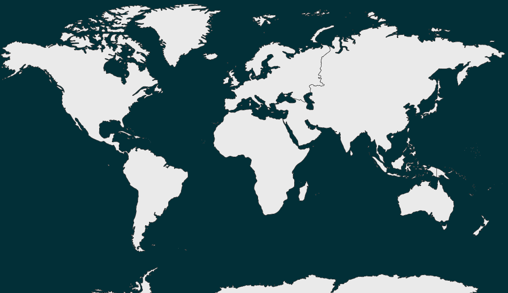

Olá, Usuário
Olá, Usuário
Horário Atual 13:00:00
Os continentes são grandes extensões de terra contínuas que constituem as principais divisões geográficas da superfície terrestre. Eles são tradicionalmente divididos em seis: África, Antártida, Ásia, Europa, América e Oceania. Cada continente tem características geográficas, culturais e climáticas distintas

Aqui mostraremos mais sobre a curiosidade de cada continente.